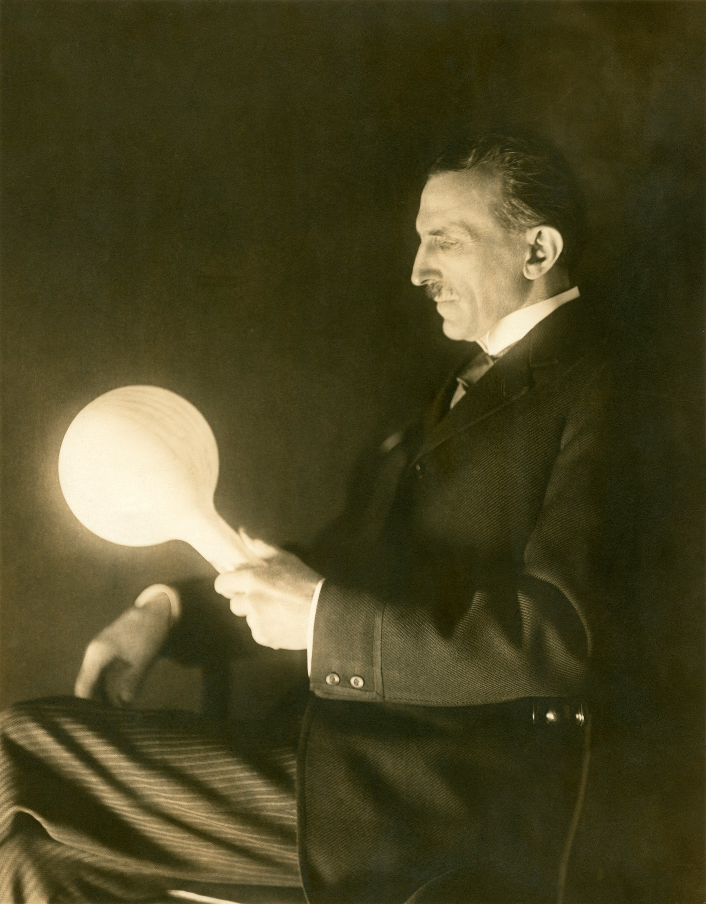
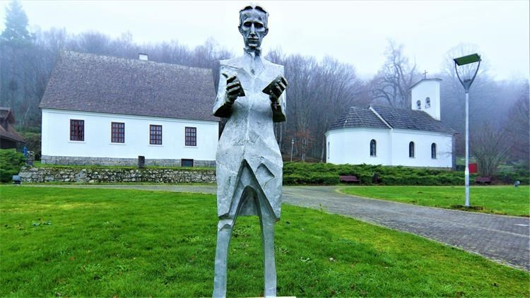
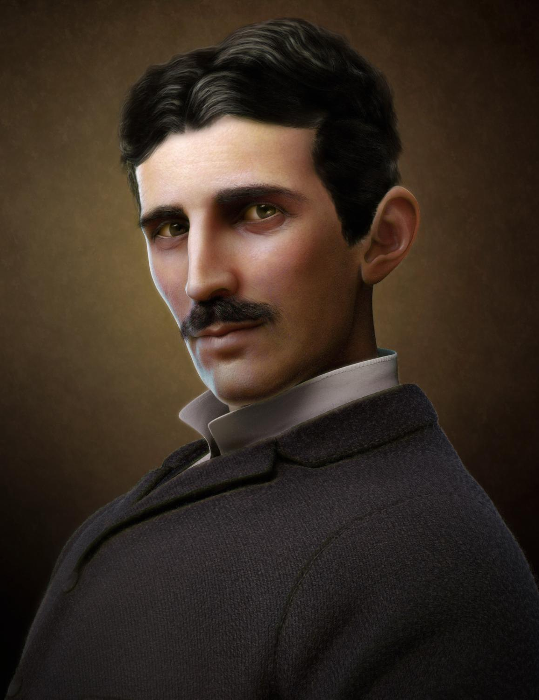

Na Visoku tehničku školu u Grazu upisao se 1875. Godine 1881. radio je u Središnjem telegrafskom uredu u Budimpešti, a potom u Telefonskoj centrali, u kojoj je načinio niz tehničkih poboljšanja. U jesen 1882. zaposlio se u Parizu u Edisonovoj telefonskoj podružnici.
Već je za vrijeme studija upozorio na nedostatke istosmjernoga elektromotora. U Budimpešti je zamislio primjenu višefaznih izmjeničnih struja za ostvarenje okretnoga magnetskoga polja koje bi uzrokovalo vrtnju u elektromotoru.
U nastojanju da razvije zamišljeni sustav izmjeničnih struja, otišao je 1884. u SAD, gdje se s preporukom voditelja Edisonova predstavništva u Europi zaposlio kod T. A. Edisona, gdje je iznosio svoje zamisli o proizvodnji i isplativijem prijenosu izmjeničnih struja, ali nije nailazio na razumijevanje.
Kako nije imao interesa i vremena baviti se razvojem i prilagodbom svojih izuma tržištu, mnogi koji su
Na Visoku tehničku školu u Grazu upisao se 1875. Godine 1881. radio je u Središnjem telegrafskom uredu u Budimpešti, a potom u Telefonskoj centrali, u kojoj je načinio niz tehničkih poboljšanja. U jesen 1882. zaposlio se u Parizu u Edisonovoj telefonskoj podružnici.
Već je za vrijeme studija upozorio na nedostatke istosmjernoga elektromotora. U Budimpešti je zamislio primjenu višefaznih izmjeničnih struja za ostvarenje okretnoga magnetskoga polja koje bi uzrokovalo vrtnju u elektromotoru.
U nastojanju da razvije zamišljeni sustav izmjeničnih struja, otišao je 1884. u SAD, gdje se s preporukom voditelja Edisonova predstavništva u Europi zaposlio kod T. A. Edisona, gdje je iznosio svoje zamisli o proizvodnji i isplativijem prijenosu izmjeničnih struja, ali nije nailazio na razumijevanje.
Kako nije imao interesa i vremena baviti se razvojem i prilagodbom svojih izuma tržištu, mnogi koji su
Godine 1885. osnovao je Tesla u New Yorku vlastitu tvrtku Tesla Electric Light and Manufacturing Company za proizvodnju  električnih lučnica (elektrolučna svjetiljka), a 1887. tvrtku Tesla Electric Company, s laboratorijem, u kojem je najprije konstruirao elektromotore izmjenične struje. U jesen iste godine prijavio je prve patente o proizvodnji i prijenosu višefaznih izmjeničnih struja i njihovoj primjeni za učinkovit pogon izmjeničnih elektromotora. Tim je izumima pokazao da je za većinu primjena izmjenična struja znatno prikladnija od istosmjerne. Teslin sustav višefaznih električnih struja i njegovu električnu rasvjetu prikazala je tvrtka Westinghouse na Svjetskoj izložbi u Chicagu 1893., te je predložila Teslin sustav izmjeničnih struja za hidroelektranu na slapovima Niagare. Hidroelektrana je bila završena 1896., a njome je, visokonaponskim dalekovodom (visoki napon je bitno smanjio gubitke), bio opskrbljivan oko 40 kilometara udaljen grad Buffalo, a potom i udaljeniji gradovi. U isto je doba po New Yorku bilo raspoređeno nekoliko stotina malih elektrana istosmjerne struje, jer se ona zbog velikih gubitaka mogla prenositi samo na udaljenosti do 3 kilometra.
Za nekoliko godina Teslin se sustav višefaznih izmjeničnih struja počeo rabiti u cijelome svijetu,  a tijekom više od jednoga stoljeća u osnovi se nije promijenio. Visokofrekvencijske izmjenične struje primijenio je za bežični prijenos signala i energije.Bavio se i istraživanjima u strojarstvu, na primjer 1913. patentirao je turbinu s mnoštvom tankih diskova a bez lopatica (Teslina turbina). Nobelova ga je nagrada mimoišla jer ju nije htio podijeliti s Edisonom. Stotine izuma, većinom iz elektrotehnike, prijavio je u 112 patenata u SAD-u i gotovo isto toliko u drugim zemljama, a mnogi su izumi ostali samo zabilježeni u njegovim dnevnicima ili stručnim časopisima. Najveće je priznanje Teslinu radu bilo dano na 11. općoj konferenciji za mjere i utege 1960., kada je za mjernu jedinicu magnetske indukcije (gustoće magnetskog toka) prihvaćen naziv tesla (oznaka T).
Slobodno je vrijeme najviše volio provoditi s prijateljima. No, uživao je i u hvatanju ptica (ljubav prema  pticama pratit će ga čitav život) i čitanju. U vrijeme puberteta volio se kartati ali tako zarađeni novac nikada nije nosio kući već ga je poklanjao drugima. Nakon završetka gimnazije dvije se godine nije školovao. Roditelji su na Nikolu vršili pritisak da postane svećenik ali on se tome protivio i upisao se na studij tehničkih znanosti u Grazu. Na Visoku tehničku školu u Grazu upisao se 1875. Prvu je godinu primao stipendiju Vojne krajine, a druge je godine stipendija izostala jer je Vojna krajina bila razvojačena. Zamolio je 1876. i 1878. stipendiju Matice srpske u Novome Sadu, ali ju nije dobio. Početkom 1880. otišao je u Prag u želji da nastavi studij, ali nema podatka da je završio studij na kojem od sveučilišta. Tijekom studija upoznao se s Voltaireovim djelima te je odlučio pročitati sve što je ovaj napisao. U konačnici je pročitao sva njegova djela, ali ne samo to nego ih je i naučio napamet. Nakon završetka studija zaposlio se u telefonskom društvu i priključivao telefone po kućama u naredne dvije godine.